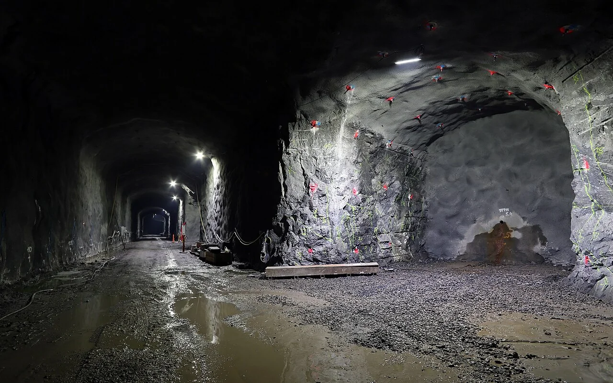
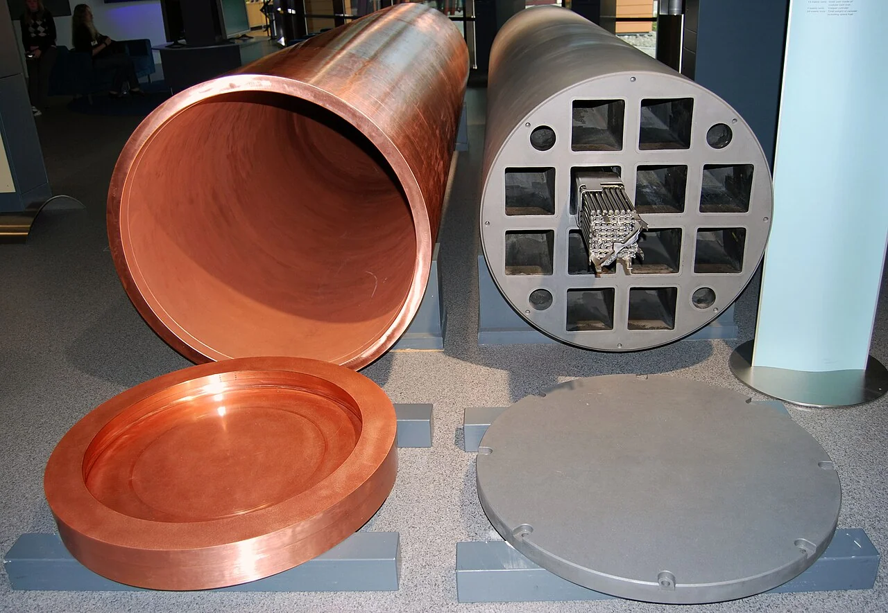
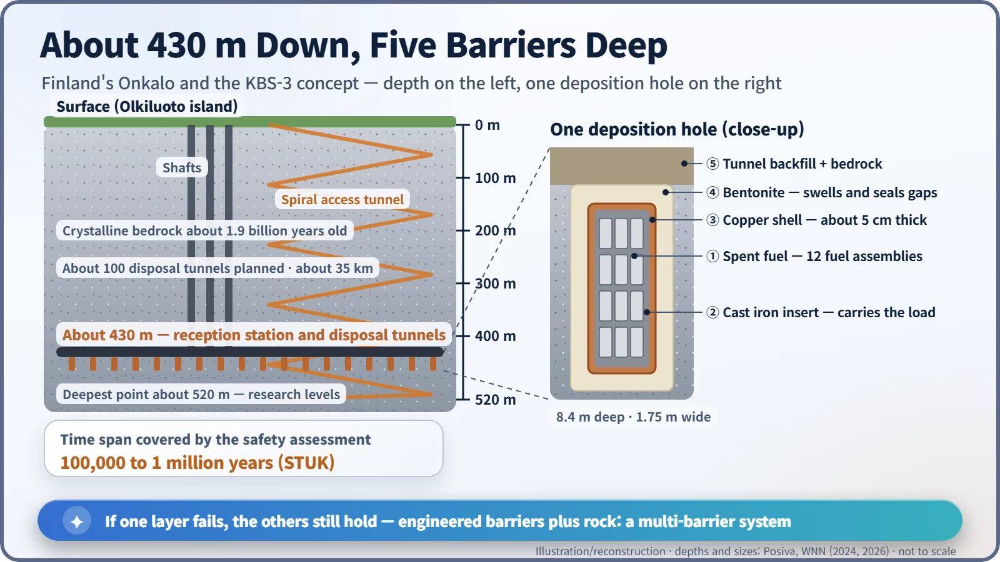

Nuclear History · 291
A Dress Rehearsal with Empty Boxes — Finland's Onkalo Repository and the Cave Built for 100,000 Years
Copper canisters, bentonite clay and 1.9-billion-year-old rock, but the slowest part was building up consent and licences step by step.
Finland began looking for a place to bury its spent nuclear fuel in 1983, chose the island of Olkiluoto in 2000 with the consent of the host town, and started digging the Onkalo repository in 2004. Using the Swedish KBS-3 method of copper canisters, bentonite clay and ancient bedrock about 430 metres down, Posiva ran a fuel-free rehearsal from August 2024 and on 22 October 2026 received the world's first operating licence for a spent-fuel repository. As of November 2026, actual disposal still awaits a final inspection by the regulator.
A rehearsal with empty boxes
On 30 August 2024, on the island of Olkiluoto in south-western Finland, an unusual rehearsal began. Workers sealed gleaming copper cylinders, lowered them by lift to about 430 metres below ground, and drove them along a tunnel to holes bored in the floor, practising every step of the job. Not one gram of spent nuclear fuel was inside: the canisters held weights or test elements made to resemble fuel. What set this rehearsal apart was the length of the run it was preparing for. The safety case looks ahead on a scale of 100,000 years. [3]
The place is called Onkalo, Finnish for "cavity" or "hollow".

Everyone knew the answer; nobody had done it
The idea of isolating long-lived waste deep underground goes back to the 1950s and soon became the international consensus. Putting it into practice was another matter. In the United States, the Yucca Mountain project stalled amid local opposition and politics, and the pattern repeated elsewhere.
Finland took a different route. A 1994 amendment to its Nuclear Energy Act required nuclear waste produced in Finland to be disposed of in Finland. In 1995 the two nuclear operators, TVO (Olkiluoto) and the company now called Fortum (Loviisa), set up a joint waste company, Posiva. [6]
20 to 7, then 159 to 3
A nationwide search began in 1983, narrowed to four candidate sites, and in 2000 settled on Olkiluoto. Under Finnish rules the host municipality has a veto; Eurajoki's council voted 20 to 7 in favour. Commentators often point out that the town had already lived alongside two reactors for two decades. After the government's "decision-in-principle", Parliament ratified it in May 2001 by 159 votes to 3. [6]
Excavation began in 2004, first as an underground research facility. A spiral access tunnel now winds down to about 520 metres. On 12 November 2015 the government granted a construction licence. "The construction licence granted now is the first in the world for a used nuclear fuel disposal facility," said the economy minister, Olli Rehn. [5]
![Timeline chart of eight milestones: 2000 Eurajoki council vote 20 to 7; May 2001 Parliament ratifies 159 to 3; 2004 excavation begins; 12 November 2015 construction licence for up to 6,500 tonnes of uranium; 30 December 2021 operating licence application; 30 August 2024 trial run with four canisters and no real fuel; 4 August 2026 STUK finds no obstacle; 22 October 2026 operating licence. A box notes that as of November 2026 the next step is a STUK inspection before first disposal, with no date set](../../assets/images/history/291-onkalo/fig2-licensing.webp)
Copper, clay and 1.9-billion-year-old rock
The method is KBS-3, developed by the Swedish waste company SKB. Its core idea is not to trust any single layer: a set of nested barriers, like Russian dolls, each with a different job. [6]
Twelve fuel assemblies, left intact, go into an insert of spheroidal graphite cast iron, the backbone that carries the load. The canister is filled with argon and closed with a steel lid, and the whole is enclosed in a copper shell about 5 centimetres thick. The copper lid is sealed by friction stir welding, which joins metal without melting it. The copper's task is to resist corrosion. [3]

Each canister is lowered into its own deposition hole, 8.4 metres deep and 1.75 metres across, drilled into the floor of a disposal tunnel. Bentonite clay fills the space around it; when it takes up water it swells, closing gaps and slowing groundwater almost to a standstill. The tunnels are backfilled with swelling clay, and the last barrier is the crystalline bedrock itself, about 1.9 billion years old. [1]

Why 100,000 years? The radioactivity of spent fuel falls with time, and the usual estimate is that it takes on the order of that long to decline to the level of the uranium ore it came from. The long-term safety assessment by Finland's regulator, STUK, covered at least 100,000 years and up to a million. [2]
The concept has had critics. In 2012 researchers at the Royal Institute of Technology (KTH) in Stockholm reported that copper might corrode even in oxygen-free water. SKB's follow-up work argued that no such corrosion process exists and that the original experiments were flawed. [7]
Why the paperwork moved slower than the rock
Posiva applied for an operating licence on 30 December 2021. STUK's deadline slipped several times, citing deficiencies in the documents, plant modifications and the need to assess a change in the planned clay material. On 4 August 2026 STUK concluded that "there is no obstacle to granting the facility an operating licence with regard to radiation and nuclear safety." In late August, drilling began on the first deposition hole intended for real disposal. [4] [2]
On 22 October 2026 the Finnish government granted the operating licence, valid to the end of 2070 for up to 6,500 tonnes of uranium. That is about 3,300 canisters, placed at up to 60 a year once operations are established, with disposal continuing into the 2120s. Then the tunnels will be backfilled and sealed, and responsibility will pass to the state. [1]
It is the first operating licence ever granted for a deep geological repository for spent fuel. But as of November 2026, no spent fuel has gone down. Posiva must finish its commissioning tests and pass a STUK inspection first, and it has not set a start date. "The world's first operating repository" will be the accurate label only after that day. [1]
From a rehearsal with empty boxes to the real performance, boring through the rock turned out to be the quicker part. Building up the "yes" took longer.